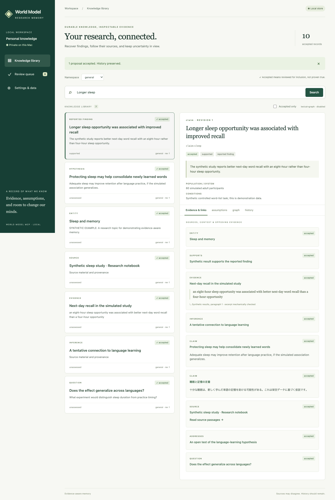

Evidence stays attached
Source passages, locators, applicable conditions, and provenance travel with a claim.
Research memory for Codex and Claude that preserves what a source reports, what an assistant infers, and why you might change your mind.
“Accepted” means reviewed for inclusion.
It does not mean proven true.
An accepted hypothesis remains a hypothesis. Similarity and repeated citations do not turn it into a fact.
Follow one checkpoint across recording, human review, a fresh assistant session, and conflicting evidence.
The actual application uses a persistent SQLite store, independent MCP processes, and an authenticated local inspector. This example illustrates that workflow with deliberately fictional findings.
Browse evidence and assumptions, compare proposal changes, explore a bounded graph, and recover earlier accepted revisions.
Read the verification report ↗Source passages, locators, applicable conditions, and provenance travel with a claim.
Assistants preserve pending proposals. A person reviews them before acceptance.
Challenges do not silently rewrite accepted knowledge. Revision history remains inspectable.
English/Japanese keyword and graph search work offline. A verified multilingual model is optional.
Captured from the local browser workflow using labeled synthetic data.

Apple Silicon macOS. The setup script installs an isolated Node.js 24 runtime and the locked dependencies. Connect Codex or Claude using generated absolute-path MCP configuration.
git clone https://github.com/theisegoria/world-model-mcp.git cd world-model-mcp ./scripts/setup.sh ./bin/world-model-mcp open
Optional model downloads require an explicit install action. Personal research is not imported automatically.
It supplies durable, inspectable, revisable knowledge to connected assistants. It does not change model weights, guarantee truth, or guarantee that an assistant follows research instructions. Human review is a workflow safeguard, not a security boundary against unrestricted programs running under the same OS account.
Build, protocol, browser, semantic, benchmark, and real-client evidence are reported separately in the repository. Any unverified client integration is identified there.